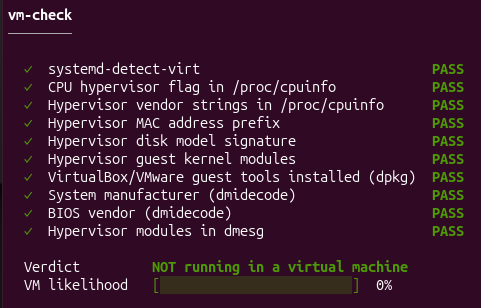
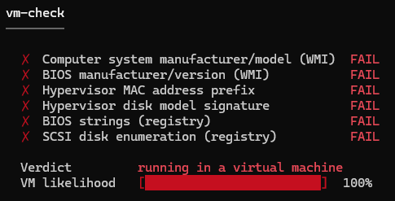
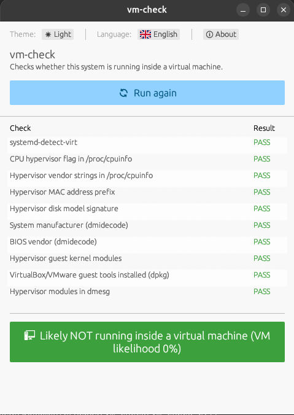
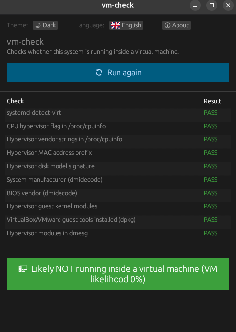
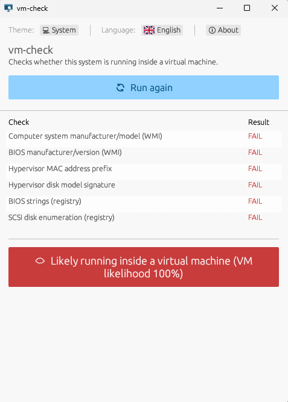

Is this machine real, or a VM?
vm-check answers that question from a weighted set of OS-level heuristics (CPU flags, DMI/BIOS strings, MAC and disk signatures, kernel modules and guest tools) and gives you a confidence score instead of a guess. Command line or GUI, Linux or Windows.

Download
Ready-to-run archives, always pointing at the latest
release.
Each archive contains both the CLI (vm-check) and the GUI
(vm-check-gui) binary: extract and run, no installer.
Building for another platform, or want to verify what you're running? See building from source. All past versions are on the releases page.
Why it's not just a yes/no check
Any single signal (a MAC vendor prefix, a BIOS string) can be wrong. vm-check runs every applicable heuristic for the host platform, weighs the results, and only commits to a verdict once the evidence is one-sided.
Weighted, not binary
Each heuristic contributes a weighted signal. Skipped or inconclusive checks are excluded from scoring entirely, rather than diluting the result either way.
Cross-platform
The same detection engine (vm-check-core) backs a
command-line tool and a native desktop GUI, on both Linux and
Windows.
Low privilege by default
Only two Linux checks ever need sudo. Every Windows
check (WMI, registry) runs as a normal user. No check needs
Administrator/UAC elevation on Windows, ever.
What it actually checks
Ten heuristics on Linux, six on Windows, run in this order, each with its own weight in the final score. Names match exactly what the CLI and GUI report.
Linux
-
systemd-detect-virt - CPU hypervisor flag in
/proc/cpuinfo - Hypervisor vendor strings in
/proc/cpuinfo - Hypervisor MAC address prefix
- Hypervisor disk model signature
- System manufacturer (
dmidecode)may need sudo - BIOS vendor (
dmidecode)may need sudo - Hypervisor guest kernel modules
- VirtualBox/VMware guest tools installed (
dpkg) - Hypervisor modules in
dmesgneeds sudo
Windows
- Computer system manufacturer/model (WMI)
- BIOS manufacturer/version (WMI)
- Hypervisor MAC address prefix
- Hypervisor disk model signature
- BIOS strings (registry)
- SCSI disk enumeration (registry)
Screenshots
The same weighted report, from the terminal and the desktop GUI, on a physical Linux host and inside an actual Windows VM guest.
CLI


GUI



Building from source
Prefer not to run pre-built binaries, or need another target? All you need is a stable Rust toolchain.
cargo build --release --workspace
Binaries land at target/release/vm-check and
target/release/vm-check-gui (.exe on
Windows). Building vm-check-gui on Linux additionally
needs a few GTK/X11 development packages; see the
README.
Usage
CLI
vm-check # run all checks vm-check --no-elevate # skip checks needing root/sudo vm-check -y # don't prompt, run elevated checks vm-check --json # machine-readable output vm-check -v # show matched strings / skip reasons
| Exit code | Meaning |
|---|---|
0 | Likely physical |
1 | Likely a virtual machine |
2 | Uncertain |
3 | Internal error |
GUI
Run vm-check-gui and click Run checks.
Elevated checks are opt-in via a checkbox, since a windowed app
can't show an interactive terminal sudo prompt, launch
the whole GUI as root (sudo vm-check-gui) to include
them. On Windows, just run it: no elevation is ever needed.
Built with egui, available in English and German, with persisted theme and language preferences.